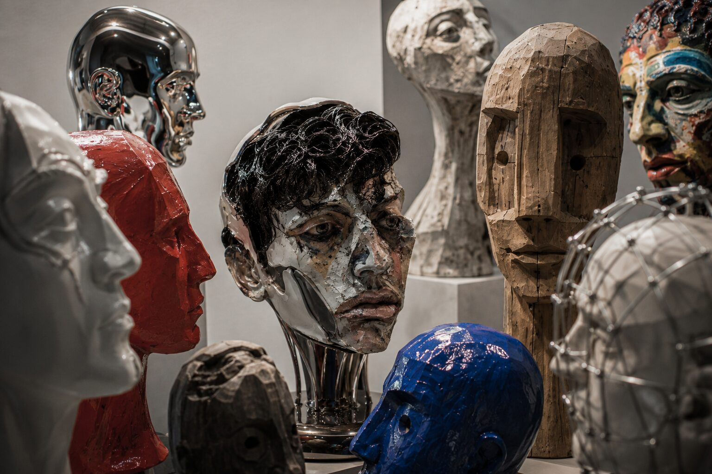

Frankfurt am Main · ein Archiv im Werden
Wie denken Menschen? Wie werden aus Geschichten Identitäten? Und warum suchen wir einander?
An diesen Fragen arbeite ich — in der Psychologie, in Zeichnungen, am Klavier, im Schreiben und in Projekten mit anderen. Für mich sind das keine getrennten Fächer, sondern Werkzeuge, die alle auf dasselbe zeigen: die Komplexität dessen, wie wir die Welt erfahren.
Ich nähere mich diesen Fragen über verschiedene Medien — Forschung, Bild, Klang und Notiz — und versuche so, unterschiedliche Aspekte der Erfahrung und der Wirklichkeit selbst abzubilden.
Inhalt
fünf Stränge · ein LebenslaufÜber mich
Geboren und aufgewachsen in Heidelberg, als Enkel des Künstlers Lui Schaugg mit Kunst großgeworden. Früh ein Interesse an Sprache, Kommunikation, Bild und Musik — Vermittlung, in jeder Form. Der ursprüngliche Plan war Design zu studieren; am Ende wurde es Psychologie, weil es mir um die Vielfalt des Menschlichen und seiner Erfahrung geht, nicht um eine einzelne Form davon.
Heute kommt ein Interesse an Leadership, Gruppenprozessen und Social Impact dazu — Gründen als eine weitere Form, Menschen zusammenzubringen. Angelegt war das schon lange: als Kind habe ich Obst an der Straße verkauft, die Texte meines Vaters Korrektur gelesen, in der Schule als Streitschlichter vermittelt, war Jugendleiter — und habe gemalt und Klavier gespielt, besonders in schweren Zeiten.
Ein Strang — wie alles zusammenhängt
Wer sind wir, wenn niemand zusieht — und wer, wenn doch?
Dieselbe Frage stelle ich in der Forschung über Identität, in den „Schuld“-Blättern und am Klavier, wenn eine Improvisation entscheidet, ob sie ehrlich sein will. Die Antworten widersprechen sich — und gerade das halte ich für interessant.

Aus dem Archiv
alle Blätter →

Anklicken zum Vergrößern · alle Blätter im Detail →
Simon Schaugg lebt und arbeitet in Frankfurt am Main — zwischen Psychologie, Bild und Klang. Wer mag, schreibt.
[email protected]